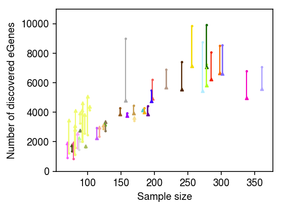

fQTL models
Table of Contents
Introduction
We previously fit fqtl models for 39,998 genes across 44 tissues from GTEx
(version 6p). Here, we analyze the fitted fqtl models.
Setup
import glob import itertools as it import os.path import numpy as np import pandas as pd import scipy.linalg as sl import scipy.special as sp import scipy.stats as st
%matplotlib inline %config InlineBackend.figure_formats = set(['retina'])
import colorcet import matplotlib import matplotlib.pyplot as plt plt.rcParams['font.family'] = 'Nimbus Sans'
Simulation
Generate the data
parallel --dry-run ./sim_data.sh {} /broad/hptmp/aksarkar/simulation/{1}/{#} :::: /broad/compbio/ypp/gtex/analysis/fqtl-gtex/result/simulation/selected.genes ::: 1 2 3 ::: 0.05 0.1 0.15 0.2 0.3 ::: 1 3 5 ::: 5 10 20 30 ::: 1001 >joblist
qsub -cwd -V -terse -sync n -j y -N sim -l h_vmem=2G -t 1 readarray -O1 tasks < /broad/hptmp/aksarkar/simulation/joblist source activate /broad/compbio/aksarkar/.conda/envs/fqtl pushd /broad/compbio/ypp/gtex/analysis/fqtl-gtex/ exec ${tasks[$SGE_TASK_ID]}
Multi-tissue eQTL mapping
Read the data
Extract the GTEx univariate summary statistics.
qsub -cwd -V -terse -j y cp /broad/compbio/data/GTEx/v6_GTEx_Analysis_2015-01-12/eqtl_data/GTEx_Analysis_2015-01-12_eGenesFiltered.tar.gz . mkdir -p egenes-filtered tar xf GTEx_Analysis_2015-01-12_eGenesFiltered.tar.gz -C egenes-filtered
Extract the gene expression matrices to get sample sizes.
qsub -cwd -V -terse -j y
cp /broad/compbio/data/GTEx/v6_GTEx_Analysis_2015-01-12/eqtl_data/GTEx_Analysis_2015-01-12_eQTLInputFiles_geneLevelNormalizedExpressionMatrices.tar.gz .
mkdir -p expr
tar xf GTEx_Analysis_2015-01-12_eQTLInputFiles_geneLevelNormalizedExpressionMatrices.tar.gz -C expr
parallel --halt=now,fail=1 -X gzip ::: expr/*.txt
qsub -cwd -V -terse -j y function z () { zcat $1 | awk -vf=$(basename $1 _Analysis.expr.txt.gz) 'NR == 1 {n = NF - 1} END {print f, n, NR - 1; exit}'; } export -f z parallel -j1 z ::: *.expr.txt.gz | awk 'BEGIN {print "tissue", "num_samples", "num_genes"} {print}' >sample-sizes.txt
sample_sizes = pd.read_csv('/broad/hptmp/aksarkar/fqtl/expr/sample-sizes.txt', sep=' ')
Read the GTEx tissue colors.
colors = pd.read_csv('/broad/compbio/aksarkar/projects/gtex-fqtl/data/tissues.colors.txt', header=None, sep='\t')
Parse the fqtl results.
def unpack(X): if '|' in X.iloc[3]: T = pd.DataFrame(it.zip_longest(*X.apply(lambda x: str(x).split('|')).values, fillvalue=np.nan)) T.columns = X.index T.fillna(T.iloc[0], inplace=True) return T else: return X.to_frame().T
fqtl_res = pd.concat([pd.read_csv(f'/broad/compbio/aksarkar/projects/gtex-fqtl/result/stat/chr{i}/50/combined.txt.gz', header=None, sep='\t') for i in range(1, 23)]) fqtl_res.columns = ['gene', 'chr', 'tss', 'tissue_idx', 'tissue_name', 'tissue_theta', 'tissue_se', 'tissue_lodds', 'snp_name', 'snp_theta', 'snp_se', 'snp_lodds', 'factor', 'pip'] fqtl_res = pd.concat([unpack(x) for _, x in fqtl_res[fqtl_res['pip'] == 0.95].iterrows()]) fqtl_res.to_csv('/broad/compbio/aksarkar/projects/gtex-fqtl/result/stat/fqtl-combined.txt.gz', sep='\t', compression='gzip')
Read the fqtl results.
fqtl_res = pd.read_csv('/broad/compbio/aksarkar/projects/gtex-fqtl/result/stat/fqtl-combined.txt.gz', sep='\t', index_col=0)
Count how many genes we retained at least one factor/loading pair for.
len(fqtl_res['gene'].unique())
20433
Relationship of sample size to number of eGenes
Read the univariate eGenes (\(q < 0.05\)).
univariate_res = {os.path.basename(f[:-24]): pd.read_csv(f, sep='\t') for f in glob.glob('/broad/hptmp/aksarkar/fqtl/egenes-filtered/*.filteredEGenes')}
Read the list of genes for which we fit fqtl models.
valid_genes = pd.concat([pd.read_csv(f'/broad/compbio/aksarkar/projects/gtex-fqtl/data/fqtl-{i}-valid.genes.txt', sep='\t', header=None) for i in range(1, 23)])
Plot the relationship between eGenes and sample size.
fqtl_egenes = fqtl_res.groupby('tissue_name')['gene'].agg(lambda x: len(set(x))) univariate_egenes = pd.DataFrame.from_dict({k: univariate_res[k].shape[0] for k in univariate_res}, orient='index') J = (sample_sizes .merge(colors, left_on='tissue', right_on=0) .merge(fqtl_egenes, left_on='tissue', right_on='tissue_name') .merge(univariate_egenes, left_on='tissue', right_index=True) .rename({'gene': 'fqtl', '0_y': 'univariate', 1: 'color'}, axis='columns'))
plt.clf() plt.gcf().set_size_inches(4, 3) for _, row in J.iterrows(): base = row['univariate'] top = row['fqtl'] plt.scatter(row['num_samples'], base, c=f'{row["color"]}', s=8, marker='.') plt.scatter(row['num_samples'], top, c=f'{row["color"]}', s=8, marker='^') plt.arrow(row['num_samples'], base, 0, top - base, lw=1, color=f'{row["color"]}') plt.xlabel('Sample size') plt.ylabel('Number of discovered eGenes') plt.ylim(0, 11000) plt.tight_layout()

fQTL finds more eGenes in brain tissues, but appears to over-regularize tissues with larger sample sizes. This is in constrast to what we observe in applying fQTL to GTEx v8.